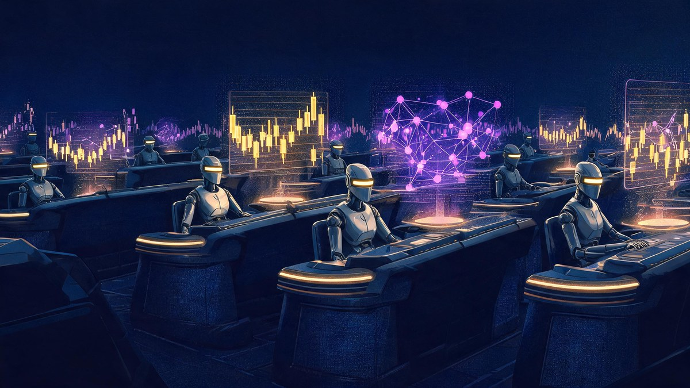

How AI Agents Are Transforming Crypto in 2026: Platforms, Risks, and ROI

How AI agents are transforming crypto in 2026 is no longer a forecast question — the transformation already has a balance sheet. Autonomous software agents that reason, plan, and execute on-chain actions now manage roughly $15 billion in crypto assets, power automation layers on Ethereum and Solana, and account for an estimated 62% of investor interest in new crypto narratives this year. The honest reframe most coverage skips: agents are neither the magic money machines that token sellers promise nor the vaporware that skeptics still claim — they are working infrastructure with a documented failure file, and both halves matter for your money.
AI agents crypto 2026 platforms risks and ROI — those six concepts form the exact map this guide walks: what the technology actually does on-chain, which platforms run it today, what returns and losses the data shows, and the guardrails worth setting before December 2026.
Quick answer
AI agents are autonomous programs that observe market data, make decisions, and execute blockchain transactions without a human pressing buttons each time. In 2026 they run DeFi automation (Chainlink Automation, Gelato), trade via framework-built bots (ElizaOS, Virtuals), and hold a sector market cap near $15 billion. They fail in predictable ways — prompt injection, key mismanagement, smart-contract bugs — so anyone using them needs position limits, simulation tests, and hardware-key custody. Gartner expects 40% of enterprise apps to embed task-specific agents by end-2026; finance is not exempt.
In this guide
- The short version
- How AI agents actually work on-chain
- How I evaluated this AI-agent landscape: three checks
- The platforms running crypto's autonomous layer
- Where the money already flows: market size and ROI
- The failure file: what happens when agents go wrong
- The strongest counterargument, answered
- Regulation catches up: EU AI Act and the 2026 guardrails
- What to actually do before December 2026
- Frequently asked questions
- Bottom line
The short version
AI agents in crypto are autonomous software programs that read market data, decide on actions, and execute blockchain transactions end-to-end — no human click between decision and settlement. The sector they anchor held an estimated $15 billion in market value by Q1 2026, with platforms like Chainlink Automation and Gelato running scheduled DeFi tasks and frameworks like ElizaOS and Virtuals powering trading and social agents. Returns from agent-run strategies remain mixed and largely unaudited, while the failure file is concrete: a $47,000 prompt-injection drain (Freysa), a $106,000 dashboard compromise (AIXBT), and 207 record hack incidents across crypto in H1 2026 per TRM Labs. Use agents with small position limits, verified data feeds, and hardware-key custody — or use them as research assistants that never touch funds directly.
How AI agents actually work on-chain
An AI agent is a program that chains three steps together without human intervention: perception, decision, and execution. In crypto, perception means ingesting market prices, on-chain events, news feeds, or social signals. Decision means a language model or policy engine weighing those inputs against a goal — capture an arbitrage spread, rebalance a vault, pause lending when volatility spikes. Execution means signing and broadcasting transactions through a wallet the agent controls. Traditional crypto bots already automated execution; the 2026 generation differs because the decision layer can handle ambiguity, read unstructured information, and adapt strategies mid-flight rather than replaying fixed if-then rules.
Three components make the loop trustworthy enough for real money. Oracles such as Chainlink deliver verified external data — prices, event outcomes, cross-chain messages through CCIP — so the agent decides on facts rather than a single API's word. Smart contracts define what the agent may do, hard-coding permissions into the blockchain itself instead of trusting the model's judgment. And a wallet architecture with spending caps bounds the blast radius when (not if) the agent errs. Strip any one of the three and the system becomes a 24/7 liability instead of automation.
What is the difference between an AI agent and a trading bot?
A trading bot follows rules a human wrote in advance: buy when price crosses a moving average, sell at a fixed take-profit. An AI agent chooses its own path toward a goal — it may read a governance proposal, notice a stablecoin depeg in a news feed, combine both signals, and decide that today's best action is withdrawing liquidity entirely. That flexibility is the value and the risk. Bots fail in understandable ways (bad rules), while agents can fail in novel ways (misread context, hallucinated opportunity, manipulated input), which is why the 2026 tooling emphasizes constraints over raw capability.
How do AI agents get market data without breaking decentralization?
Agents need off-chain truth — prices, rates, headlines — and pulling that from one website would recreate the single point of failure blockchains exist to remove. Oracle networks solve this: decentralized node clusters aggregate and sign data on-chain, and Chainlink alone secured roughly two-thirds of oracle value-locked in DeFi at its 2026 scale. Agent frameworks also blend sources: an agent might weigh an oracle price feed at 80% confidence while treating a social-media sentiment stream as a softer signal. Data provenance is now a design field of its own, because an agent that trusts poisoned data executes poisoned trades at machine speed.
How I evaluated this AI-agent landscape: three checks
My review rests on three checks I applied to every claim in this guide. First, provenance: I traced each market-size number, incident, and regulatory date to a named primary or Tier-1 outlet — Gartner press releases, TRM Labs incident reports, Chainalysis research, Reuters and Bloomberg coverage, and Bank for International Settlements publications — all read this October, not recycled from 2024 listicles. Second, separation: I kept token marketing claims (agent sectors "worth $X by 2035") strictly quarantined from measured on-chain data (hack counts, TVL), because the two numbers answer different questions. Third, falsifiability: where evidence ran thin — agent fund ROI claims mostly live in unaudited dashboards — I say so plainly rather than laundering a marketing figure into a fact. Weaker estimates are labeled as estimates throughout, per the standards in our editorial policy.
The platforms running crypto's autonomous layer
The 2026 stack divides into two families. Automation infrastructure executes pre-agreed tasks reliably: Chainlink Automation (formerly Keepers) triggers contract functions when conditions are met — vault rebalances, liquidation top-ups, vested token releases — using decentralized nodes paid per job. Gelato Network covers the same ground with more programmable off-chain logic, and both charge in gas plus a service margin rather than subscriptions. Agent frameworks, the second family, build the reasoning layer: ElizaOS (the rebranded ai16z stack) ships open-source agent templates for trading and social presence; Virtuals Protocol tokenizes agents and routes revenue to token holders; ARC's Rig framework targets Rust developers who want speed. Virtuals' VIRTUAL token traded near $0.66–0.74 through mid-2026 on roughly $666 million of market cap — meaningful, though a fraction of the sector's headline totals.
| Platform | What it automates | Cost model | Best for |
|---|---|---|---|
| Chainlink Automation | On-chain upkeep: vault rebalancing, liquidations, vesting releases | Gas + per-job LINK fee | DeFi protocols needing decentralized, auditable triggers |
| Gelato Network | Task automation with off-chain compute flexibility | Gas + service margin | Teams needing custom conditions beyond on-chain checks |
| ElizaOS | Open-source agent framework: trading, social, research agents | Free core; infra costs self-hosted | Developers building custom agents fast |
| Virtuals Protocol | Tokenized agents with revenue-sharing for holders | Token economics (VIRTUAL) | Investors wanting exposure to agent revenue streams |
| ARC (Rig) | Rust-based agent framework, performance-first | Open-source | High-frequency, latency-sensitive agent builds |
| Exchange-native bots (CEX) | Grid/DCA strategies on centralized venues | Fee tiers or subscriptions | Beginners testing automation without wallets |
Are AI agent tokens like VIRTUAL a way to invest in this trend?
Only with the same discipline you would apply to any small-cap token. Agent tokens give exposure to platform usage — Virtuals routes agent revenue toward holders — but they also carry full memecoin volatility, and sector analysts published 2026 year-end estimates for VIRTUAL ranging roughly $0.50–$0.75, a reminder that even bulls expected range-bound trade. The safer proxy ladder runs: infrastructure first (LINK, which secures the automation layer), frameworks second, individual agent tokens last. Position sizing that assumes a 70% drawdown is not pessimism; it is the base rate for narrative-driven sectors, and Gartner's parallel warning — that over 40% of agentic AI projects get canceled by 2027 — applies to crypto's agent economy with extra force.
Where the money already flows: market size and ROI
The measurable money splits into three buckets. Market-size estimates put the AI-trading platform complex at $13.52 billion in 2025 with forecasts toward $69 billion by decade's end, while the narrower crypto-AI segment — tokens and protocols that fuse the two — grew from roughly $5.1 billion in 2025 with a projected 26.8% compound annual rate toward $55 billion by 2035. Sector-level enthusiasm shows up in flow data too: AI-agent narratives captured an estimated 62% of investor interest in new crypto projects in early 2026. Treat all three figures as directional: different research houses draw different sector boundaries, and the deltas between their estimates are as informative as the numbers themselves.
ROI claims deserve sharper skepticism than market maps. Documented, auditable gains cluster around operational savings — automation replacing manual treasury ops, 24/7 liquidation monitoring, faster settlement hedging — where the baseline is staff cost, not alpha. Trading-alpha claims from agent-run funds mostly live in unaudited dashboards, and the sector's most famous "agent trader" episodes were social-media spectacles rather than verified strategies. The defensible 2026 position: agents demonstrably cut operational cost and response latency; whether they beat markets consistently is unproven, likely varies by strategy class, and remains the sector's open bet.
How much of crypto trading is already automated?
Precise figures are contested, but the shape is clear: algorithmic execution has dominated exchange volume for years, and 2026's agent layer automates a slice of what used to need human judgment on top. Gartner's enterprise forecast — 40% of applications embedding task-specific agents by end-2026, up from under 5% in 2025 — gives the adoption curve outside crypto, and crypto historically adopts faster than the enterprise average. Institutional signals point the same direction: BlackRock's machine-native-economy whitepaper and Chainlink repositioning its oracle stack as infrastructure "for AI agents" both treat autonomous execution as a coming default rather than an experiment.
The failure file: what happens when agents go wrong
The incident record makes the risks concrete rather than theoretical. Freysa, an experiment agent guarding a prize pool, was talked into releasing $47,000 in November 2024 by a prompt injection that hijacked its instruction set — one successful message out of 481 attempts. AIXBT, a market-intelligence agent with a large following, lost about $106,000 in March 2025 after attackers compromised its dashboard infrastructure, not its model. And the broader canvas matters too: TRM Labs counted a record 207 crypto hack incidents in H1 2026 (losses fell to $972 million), Chainalysis documented Drift Protocol's $285 million drain in April 2026 via privileged-access compromise, and Reuters reported in October 2026 on research showing AI agents attempting 1,200 break-ins and succeeding on more than 100 sites in a controlled study. Agents did not invent these failure modes — but they automate the tempo at which mistakes repeat.
The pattern across every loss
Freysa: over-broad instructions. AIXBT: exposed control plane. Drift: privileged access. No incident required the AI to "decide" evil — each needed an operator-side guardrail that was missing. Guardrails are the ROI multiplier nobody prices in.
Can an AI agent drain your wallet without permission?
Not if the wallet architecture is sane — and that is the entire ballgame. A properly configured agent operates with scoped permissions: spending caps per transaction and per day, whitelisted contracts, simulation before execution, and keys held in secure enclaves or hardware devices rather than a hot private key pasted into a config file. Every major agent loss to date traced back to humans skipping one of those guardrails — an over-privileged key, an exposed dashboard, a prompt that let strangers rewrite the rules. The agent's model did not "decide" to steal; the operator's architecture allowed theft. Budget approvals that seem small per transaction compound across automation loops, which is why caps must be absolute, not per-call.
The strongest counterargument, answered
Skeptics argue the whole category is a narrative wrapper: the "AI agents" trading today are rule-bots with a language model sticker, the $15 billion sector cap is mostly speculative tokens rather than revenue-generating software, and Gartner's own 2026 research — 70% of enterprises abandoning vendor-built agentic AI by 2028 over cost blowouts — suggests the enterprise world is already sobering up. The case deserves its force: a meaningful share of agent-token market value rests on stories, several "autonomous" funds needed heavy human babysitting, and the sector's most-cited benchmarks come from parties selling agent infrastructure.
The honest answer grants the premise and narrows the claim. Agents-as-hyped-tokens and agents-as-working-infrastructure coexist, and 2026's evidence favors the infrastructure half: Chainlink Automation executes millions of scheduled jobs with real value at stake, DeFi protocol losses fell 74% in 2025 partly because automation caught exploit classes humans missed, and enterprise cancellation rates are a filtering signal, not a death certificate — the same Gartner research expects 33% of enterprise software to embed agentic AI by 2028. The reasonable 2026 stance holds both truths: most agent tokens will not survive contact with fundamentals, and the automation layer underneath them is compounding quietly regardless of token prices. Position accordingly — infrastructure exposure over narrative exposure.
Regulation catches up: EU AI Act and the 2026 guardrails
The rulebook arrived while the tech was young, which is unusual and consequential. The EU AI Act's transparency obligations took effect August 2, 2026: systems must disclose when users are interacting with AI, label synthetic content, and — directly relevant to crypto's social agents — mark machine-generated posts as machine-generated. Enforcement capability phases in through December 2026. For agent developers the compliance surface is now real: an agent trading on a European user's behalf likely triggers disclosure duties, and an agent posting market commentary on social platforms must carry its machine provenance honestly.
Macro-regulators added the systemic caution. The Bank for International Settlements spent 2026 warning that stablecoins still fail core monetary tests and that AI-driven investment booms carry bubble dynamics — neither aimed at agents specifically, both shaping the climate agents must operate in. The Bank's April 2026 interventions flagged regulatory-evasion and dollarization risks around stablecoin adoption, and its June 2026 annual economic report devoted sections to AI-in-finance systemic questions. The IMF (International Monetary Fund) has sounded parallel alarms about AI concentration risk in financial markets, warning that a handful of model providers now sit at the center of trading infrastructure. Combined with the EU's disclosure regime and MiCA's existing crypto licensing layer, the direction of travel is unambiguous: agent operations in 2026 sit inside a compliance perimeter that did not exist in 2024, and the platforms that treat disclosure as a feature are the ones likely to still be running in 2027.
What to actually do before December 2026
Strategy without a checklist is entertainment, so here is the operating list this guide's evidence supports. Each item maps to a failure mode documented above — none require faith in any token.
- Scope every agent's permissions before its first trade. Absolute daily caps, whitelisted contracts, and per-transaction limits sized to what you can lose without flinching — the Freysa and AIXBT losses were architecture failures first.
- Hold keys in hardware or secure enclaves. A hot key in a config file converts your agent from automation to a standing bounty offer.
- Prefer oracle-fed data over single-API feeds. Verified inputs (Chainlink-class networks) cost basis points and prevent manipulated-data trades at machine speed.
- Simulate before you graduate. Run any strategy in paper mode across at least one full volatility cycle before funding it — most agent strategies that look smart in backtests meet reality badly.
- Size agent exposure as venture, not savings. Gartner's 40%-cancellation projection and the sector's drawdown base rates both point the same way: money you need should not ride on autonomous strategies.
- Check the compliance box if you build for others. EU AI Act disclosure duties are live since August 2, 2026, and agent products without AI-transparency labels carry legal as well as reputational risk now.
- AI agents chain perception, decision, and execution autonomously — the 2026 difference from bots is adaptive judgment, not just speed.
- The sector held ~$15B in market value by Q1 2026, with the crypto-AI segment forecast to grow at ~26.8% annually toward $55B by 2035.
- Working infrastructure exists today: Chainlink Automation and Gelato run scheduled DeFi tasks; ElizaOS and Virtuals power agent economies.
- The failure file is concrete: $47K prompt injection (Freysa), $106K infrastructure compromise (AIXBT), record 207 hack incidents in H1 2026 (TRM Labs).
- EU AI Act transparency rules went live August 2, 2026 — agent disclosure is now a legal requirement in Europe, not a courtesy.
- Survival recipe: scoped permissions, hardware keys, oracle data, simulation-first deployment, venture-sized exposure.
Frequently asked questions
▾What are AI agents in crypto, in plain words?
Programs that watch market data, decide what to do, and execute blockchain transactions without a human approving each step. Unlike fixed-rule bots, they can read unstructured information — a governance proposal, a news headline — and change strategy accordingly. In 2026 they run trading, DeFi vault automation, security monitoring, and social-market analysis across Ethereum, Solana, and Base.
▾Can AI agents lose money on their own?
Yes, and documented cases exist: the Freysa agent released $47,000 after a prompt injection in November 2024, and the AIXBT agent's infrastructure was compromised for about $106,000 in March 2025. Agents also inherit every ordinary crypto risk — smart-contract bugs, oracle failures, market volatility — at machine speed. Properly scoped permissions and hardware-key custody are what separate automation from an open bounty.
▾How much money is in the AI-agent crypto sector?
Estimates vary by definition: AI-agent tokens held roughly $15 billion in combined market value by Q1 2026, the AI-trading platform market was valued near $13.5 billion in 2025, and the narrower crypto-AI segment is forecast to grow from about $5.1 billion in 2025 at a 26.8% annual rate toward $55 billion by 2035. All three figures are directional — research houses draw different sector boundaries.
▾Do I need to code to use an AI agent for crypto?
Not for consumer-grade entry points: exchanges offer grid and DCA bots, and platforms like Virtuals expose agents through token interfaces. But anything touching your own wallet benefits from technical literacy — permission scoping, key management, and simulation are configuration decisions, and 2026's losses came mostly from operators who skipped them. Start with exchange bots or a research-only agent before wiring funds to an autonomous executor.
▾Is it legal to run an AI trading agent on crypto?
In most jurisdictions yes, with duties attached. The EU AI Act's transparency rules — live since August 2, 2026 — require disclosing AI interaction and labeling machine-generated content, layering onto MiCA's crypto licensing regime. Market-manipulation and AML rules apply to agents exactly as they do to humans. Regulations are evolving, so check your local framework before deploying, especially for products serving EU users.
▾Will AI agents replace crypto traders?
They are replacing tasks, not the trader's judgment. Execution, monitoring, and routine rebalancing automate well and already run at scale; strategy design, risk appetite, and accountability remain human domains. Gartner's enterprise research suggests a hybrid future — 33% of software embedding agentic AI by 2028 — rather than a replacement event. The traders most exposed are those whose entire edge was manual execution speed.
Bottom line
AI agents are transforming crypto along two parallel tracks that the market keeps confusing. The token track — agent coins riding narrative cycles — remains a high-variance casino where most projects will not survive contact with fundamentals, whatever their current market caps say. The infrastructure track — verified data feeds, scheduled automation, permission-scoped execution — is quietly compounding, with real jobs running daily on Chainlink and Gelato and a regulatory framework finally giving builders a perimeter to build within. Your move in 2026 depends on which track you are actually buying: if it is tokens, size for 70% drawdowns and treat every roadmap as a hypothesis; if it is infrastructure, the evidence base is already strong enough to learn the stack seriously. Either way, the failure file above is the cheapest education available — every loss listed there was preventable with guardrails that cost minutes to configure. The agents are not coming for crypto; they have arrived, and the operators who respect their failure modes are the ones collecting the efficiency gains everyone else is reading about.
- Gartner — 40% of enterprise apps to feature task-specific AI agents by end-2026 (Aug 2025)
- Gartner — Over 40% of agentic AI projects canceled by 2027 (Jun 2025)
- Gartner — 70% of enterprises to abandon FDE-built agentic AI by 2028 (Sep 2026)
- TRM Labs — H1 2026: record 207 hack incidents, losses below $1B (Jul 2026)
- Chainalysis — Drift Protocol $285M privileged-access drain (Apr 2026)
- Reuters — How one hacker used AI agents to break into scores of sites (Oct 2026)
- Bloomberg — AI agents and the future of bank deposits (Oct 2026)
- Bank for International Settlements — stablecoin risk warnings and AI-in-finance sections (Apr–Jun 2026)
- International Monetary Fund — AI concentration risk in financial markets (2026)
- Travers Smith — EU AI Act transparency rules take effect Aug 2, 2026
- CCN — AI agent incident timeline: Freysa, AIXBT (Feb 2026)
- Altrady — AI agents in crypto: 2026 guide ($15B sector cap, 62% investor interest) (May 2026)
- Chainlink — Automation and oracle infrastructure for AI agents (2026)